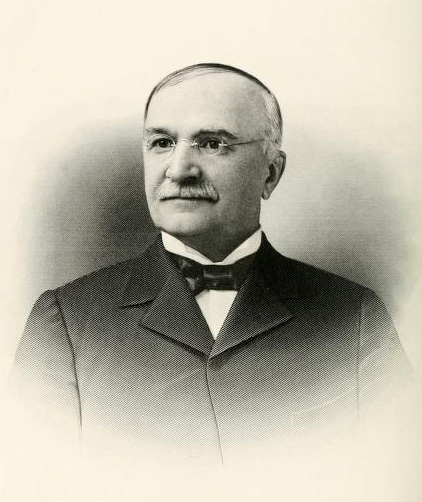

Henry Gray Turner
Back to the Railroad Organizers index
Henry Gray Turner (March 20, 1839-June 9, 1904) was a teacher, Confederate officer, Quitman lawyer, Georgia legislator, eight-term United States representative, railroad lawyer, and associate justice of the Georgia Supreme Court. He entered Brooks County as a young schoolmaster and spent most of the rest of his life in Quitman. His national reputation came from sixteen years in Congress, where he worked on election contests, tariff legislation, and federal finance. His local record also included a bank board, the public library, the Quitman Hotel project, and the South Georgia Railway.[1][2][3]

Henry Gray Turner. Engraving from Men of Mark in Georgia, volume 4, reproduced by NCpedia.
Turner was not on the company's first board in March 1896, but he later served as a director and general counsel. The original charter petition is still missing, so his place in Huxford's list of 26 petitioners remains strong probable. His 1897 trip to Washington to seek mail service, later directorship, and legal office are verified by contemporary newspapers.[4][5][6]
The Henry Gray Turner House and Grounds is National Register reference 80000977.[7]
North Carolina family and education
Turner was born on his father's farm near Henderson, North Carolina. The best-supported county wording is Franklin County, in the area later placed in Vance County. Huxford instead says Granville County, "now Franklin," while Men of Mark describes Granville, now Vance. The safest description is near Henderson with the county conflict preserved.[2][3][8][28]
His parents were Archibald Adams Turner and Mary Ann Howze Turner. A 1907 North Carolina biography traces Archibald to Vines and Anna Turner, who had moved from Dinwiddie County, Virginia, to Granville County. That ancestry is a compiled account rather than a substitute for deeds, probate, or original vital records. Henry's brother Vines Edmunds Turner later became a Raleigh dentist and Confederate officer.[2][8]
The family moved into Henderson when Henry was about eight so the children could attend better schools. In June 1857 he enrolled at the University of North Carolina but did not join his class after an illness. He then pursued elective study at the University of Virginia. His father died that December. The estate could not support further college work, so Henry left without a degree and began earning his living as a teacher.[2][3][8]
He taught briefly in Alabama, then came to south Georgia. Later accounts differ slightly on the sequence, but they agree that he became principal of Piscola Academy and was living in the area by 1860. Huxford's census summary placed twenty-one-year-old Henry G. Turner, a North Carolina-born schoolmaster, in the Brooks County household of Matthew and Martha Mizell. The Congressional biography dates his move to 1859.[1][3][9]
Confederate service
Turner entered Confederate service through Georgia before transferring to the Twenty-third North Carolina regiment. Later biographies say he began as a private in the Savannah Volunteer Guards in 1861. NCpedia gives May 6, 1862, as his Georgia enlistment date. The National Park Service index, transcribed from his federal service record, shows him entering Company H as second lieutenant and leaving as captain. On August 18, 1862, he became captain of the company. His brother Vines was then serving as the regiment's adjutant. Later biographical accounts place Henry at Mechanicsville, Cold Harbor, Malvern Hill, Fredericksburg, Chancellorsville, and Gettysburg.[2][3][8][29]
At Gettysburg on July 1, 1863, Turner was wounded and captured. The 1907 North Carolina account says a rifle ball struck his left shoulder. He was held in Union custody, including at Johnson's Island, and remained a prisoner for more than a year. A March 1864 statement signed by North Carolina prisoners shows him still identifying himself with Granville County while in captivity.[2][8]
The exact release chronology varies in later summaries. NCpedia, drawing on the North Carolina troop roster, says Turner was held at Johnson's Island, Point Lookout, and Fort Delaware, was cleared for exchange, and reached Richmond in October 1864. Huxford and two early biographies describe release or transfer in November. Find a Grave gives parole on September 28 and exchange on October 5. The central facts are verified, but the day-by-day prison sequence should remain qualified until his complete service and prisoner file is inspected.[2][3][10]
His health remained affected by the wound and captivity. He returned first to the family home in North Carolina, then made his way back to Quitman. Later political tributes sometimes linked his final illness to his wartime imprisonment, but no located medical record establishes that causal claim.[2][8]
Marriage, household, and children
Turner married Lavinia Calhoun Morton, daughter of Judge James Oliver Morton and Sarah Caroline Young Morton, in June 1865. Huxford, NCpedia, and the 1907 North Carolina biography give June 18. Men of Mark in Georgia gives June 16. No original marriage license or church entry was located online, so June 18 is the better-supported date but the two-day conflict remains open.[2][3][8][11]
The 1870 census placed Henry, Lavinia, and their young sons James and Henry in the Morton household at Quitman. Huxford names five children: James Morton Turner, who died in childhood; Henry Turner, who became a farmer; India Turner, later wife of Samuel S. Bennet; S. Morton Turner, a lawyer and Georgia legislator; and Archibald Alpheus Turner, who died in infancy. The 1900 census index places Henry and Lavinia in Quitman with India and S. Morton. The five-child total and three surviving adult children are independently supported by the 1907 biography and contemporary 1904 and 1914 family reports.[11][12][13]
The family history should not be simplified to four children. A public Ancestry family-tree page gives four, but the federal census and Huxford's named list support five. James and Archibald died young and do not appear in later households.[11][13]
Lavinia survived her husband and died April 20, 1914. She was buried with him at West End Cemetery. India and S. Morton remained closely connected to the Quitman home, while Henry farmed and raised a family of his own.[3][11][14][32]
Admission to the bar and legal practice
Turner studied law before the war and resumed after returning to Quitman. The date of his admission contains another small conflict. Huxford's narrative biography and other secondary sketches say October 1865. Huxford's earlier chapter, presented as a transcription from Berrien Superior Court, says he was admitted at the November 1865 term. The court-based passage is closer to the original record and controls here, although the underlying minute book was not inspected.[3][15]
He built a substantial practice at Quitman and regularly appeared in the Southern Judicial Circuit. Much of the surviving praise of his legal ability comes from memorial writing, where admiration was the purpose. The harder evidence lies in his long practice, legislative assignments, congressional election work, and later appointment to Georgia's highest court.[2][8][16]
Turner also joined the local bar's June 1866 memorial for four Brooks County lawyers killed during the war. The document names him with John G. McCall, William A. Lane, William B. Bennet, James H. Hunter, and Carey W. Styles. It is direct evidence that he had entered the local professional community by then.[15]
Georgia politics
Huxford says Turner served as a Democratic presidential elector in 1872, while NCpedia describes him as a state Democratic convention delegate that year. The official House biography separately records him as a delegate to the 1876 Democratic National Convention. He represented Brooks County in the Georgia House from 1874 through 1876 and again in 1878 and 1879. Huxford and other later biographies compress those terms. The official congressional chronology controls here.[1][2][3]
He chaired the House General Judiciary Committee and became a leading legislator. In 1879 he helped manage impeachment proceedings against state officials accused of misusing public funds. These roles explain why his later congressional work on contested elections and legal questions drew attention.[2][3]
In 1880 Turner won Georgia's Second District seat in the United States House. He entered the Forty-seventh Congress on March 4, 1881, and remained through March 3, 1897. That was eight terms: the first election plus seven reelections. Some reference pages call them seven consecutive terms, but the official congressional span covers eight Congresses.[1][2]
Georgia's 1892 redistricting moved him from the Second to the new Eleventh District. The district number changed, not the identity of the representative. He served the Second through the Fifty-second Congress and the Eleventh in the Fifty-third and Fifty-fourth.[1][3]
Congressional work and political position
Turner chaired the House Committee on Elections in the Forty-eighth and Forty-ninth Congresses and the Committee on Expenditures in the Department of the Interior in the Fifty-third. He later served on Ways and Means. His work in the Hurd v. Romeis election contest became a frequent example in biographical sketches. Turner favored his Democratic colleague Frank Hurd's tariff position but concluded that the record did not justify unseating Republican Jacob Romeis. The account is useful evidence of the reputation Turner built, though its most polished retellings are memorial rather than neutral reporting.[1][8][16]
Tariff reduction was one of his central causes. He opposed protective rates and worked on revenue legislation from a generally conservative Democratic position. By the 1890s he also defended the gold standard against free silver. The money question separated him from Georgia's dominant Democratic leadership in 1896.[2][3][8]
Turner contributed the Georgia chapter to the 1890 book Why the Solid South? Or, Reconstruction and Its Results. The chapter is primary evidence of his own Democratic interpretation of Reconstruction, not an objective modern history. It defended white Democratic rule and portrayed Reconstruction governments through the racial and partisan assumptions of its time. The book should be cited for what Turner argued, not used uncritically as proof that his account was correct.[17]
In 1896 the Democratic national convention adopted a free-silver platform. Turner would not support it. His Georgia allies reportedly offered him another congressional nomination, but he declined rather than campaign on a platform he rejected. He did not join the Republican Party and returned to private practice when his term ended in March 1897.[2][3][8]
Friends promoted him for governor in 1901, but he did not enter the race. Huxford and the 1907 biography attribute that decision to poor health. Contemporary campaign coverage would be needed to reconstruct how close the effort came to a formal candidacy.[3][8]
Education, library, and local development
Turner's civic work started before his national career. He signed the March 1869 call that organized the Brooks County Agricultural Society. Huxford lists him as a Quitman Academy trustee in 1870 and again in the early 1880s. These lists come from Huxford's use of local newspaper files; the individual newspaper pages were not all recovered in this project.[3][18]
In March 1877 he became president of the first documented Quitman Library Association and helped draft its rules. He later served on the first board of the Brooks County Library Association organized in 1880. A 1912 anniversary report independently named Judge H. G. Turner among the original directors. This is a firmer local role than a general statement that he merely supported education.[18][19]
He was also a trustee of the University of Georgia for a period not fully reconstructed here. Huxford and contemporary memorials agree on the service, but the exact appointment and end dates were not located.[3][16]
The Quitman Hotel Company grew from a subscription drive in 1889. Huxford says Turner and F. J. Spain led the effort and quickly raised $13,000, then lists Turner as a charter member. A contemporary report verifies the company and hotel project but does not place Turner on the first board or among its officers. Subscription leader and charter member are strong probable; director or officer is not established.[3][20]
Turner joined the Bank of Quitman board in February 1897 after Joseph Mabbett resigned. The election is verified by a contemporary report. Huxford says Turner was still a director at his death, but no full run of annual bank minutes was found. Continuous service through June 1904 is therefore strong probable rather than independently verified year by year.[21]
Huxford also says Turner subscribed $2,000 during the 1899 campaign to reactivate and enlarge the town's cotton mill. The named subscriptions were later increased by 25 percent. No stock ledger or contemporary subscription list was located, so the amount remains a detailed secondary claim.[3]
South Georgia Railroad and Railway
Huxford places Turner among 26 petitioners for the South Georgia Railroad charter in 1896. The original petition, granted charter, and subscription book have not been found online. The March 23 organization report verifies the corporation, capital structure, first board, and officers, but it does not print the petitioner list. Turner was not on the first board and held no first executive office.[4][22]
The proper grade for his 1896 petitioner role is strong probable. Huxford's roster is specific and internally tied to the company history, but it lacks the underlying document needed for direct confirmation. The evidence also does not establish Turner's initial subscription amount or share count.[4]
His next railroad role is direct. In October 1897 the Valdosta Times reported that Turner and company president James W. Oglesby went to Washington specifically to obtain United States mail service over the line. This was practical work for the operating railroad, not proof of a federal office or contract award.[5]
Turner was absent from the nine-member board reelected in March 1899. By the March 27, 1900 annual meeting, however, he had joined the board and become general counsel. The old board was reelected except Turner, who declined another director term because he was serving as counsel; James O. Morton took his board seat. This contemporary report verifies both a later directorship and the legal office.[6][23]
The dates of his election as director and appointment as counsel remain unresolved. The evidence places both between the March 1899 annual meeting and March 27, 1900. His fee, responsibilities, and length of counsel service were not found.[6]
West Coast Railway
Turner attended the West Coast Railway Company's organization meeting in Greenville, Florida, in December 1900. The project was intended to extend from Greenville toward Perry and the Gulf and to work closely with the South Georgia Railway. Two contemporary accounts named Turner among the Quitman participants.[24]
His presence at the organizing meeting is verified. Stock ownership is strong probable because the gathering was described as a stockholders' meeting, but neither report explicitly states that every named attendee owned shares. The report also says all directors except two Florida men came from Quitman. That makes Turner a strong probable first director, but no separate director list, charter, or minutes were located. His stock amount is unresolved.[24]
Georgia Supreme Court
Governor Joseph M. Terrell appointed Turner an associate justice of the Georgia Supreme Court in July 1903. He accepted despite health problems. His service was brief. He resigned in April 1904 and returned to Quitman.[2][3][8][30]
Sources give two compatible reasons for the resignation. Huxford stresses illness. The 1907 North Carolina biography also says the court kept him in Atlanta for most of the year while Lavinia remained in Quitman caring for elderly parents. Both may have mattered. No resignation letter was found to rank one explanation over the other.[3][8]
The Georgia Reports memorial, prepared soon after his death, is a strong source for his standing with the bench and bar but remains commemorative writing. It is best used for dated court service and attributed judgments about his character, not as independent proof of every biographical detail.[16]
House at Nocturne
Turner's Quitman residence later became known as Nocturne. The National Park Service's current national dataset lists the Henry Gray Turner House and Grounds at 1000 Old Madison Road, 20.7 acres, with significance in law, politics and government, architecture, and landscape architecture. It was listed January 8, 1980, under reference 80000977.[7]
The Library of Congress also holds the Historic American Buildings Survey record for the Henry Gray Turner House under HABS GA-228. The architectural records verify the property and its later documentation. They should not be stretched into proof that every later building feature dates to Turner's occupancy.[25]
Illness, death, and burial
In early June 1904 Turner traveled to Baltimore for medical advice. A physician advised against an operation because of his weakened condition. On the return trip Turner stopped at the Raleigh home of his brother, Dr. Vines E. Turner. His condition worsened, and he died there at about two o'clock on the morning of June 9.[2][8][26][31]
His body was returned to Quitman. The funeral and burial took place June 11 at West End Cemetery. Contemporary Georgia newspapers, NCpedia, Huxford, and the cemetery memorial agree on the death date and burial place.[2][3][10][26]
Lavinia, three adult children, and other relatives survived him. Early biographies state that a daughter and two sons survived, which matches Huxford's five-child account after the two childhood deaths.[2][3]
Georgia created Turner County in 1905 and named it for him. The Georgia historical marker says the act was approved August 18, 1905. Huxford gives July 18. The contemporary statute should settle the exact approval date; the current official marker supports August 18.[27]
Evidence assessment
| Claim | Grade | Reason |
|---|---|---|
| Birth March 20, 1839, near Henderson, North Carolina | Verified with county-description conflict | Institutional and early biographies agree on the date and vicinity; Franklin is best supported, but Granville appears in other accounts. |
| Parents Archibald Adams and Mary Ann Howze Turner | Verified | Independent North Carolina biographies agree; deeper ancestry remains compiled. |
| Piscola Academy principal and 1860 Brooks County schoolmaster | Verified | Biography and census evidence align. |
| Captain, Company H, 23rd North Carolina | Verified | Military roster-based biography and independent institutional sources agree. |
| Wounded and captured at Gettysburg | Verified | Multiple independent sources agree; exact prison and release sequence varies. |
| Marriage to Lavinia Morton in June 1865 | Verified with day conflict | June 18 is supported by three sources; Men of Mark gives June 16; original record missing. |
| Five children, three surviving to adulthood | Verified | The 1907 biography and contemporary 1904 and 1914 family reports agree; Huxford names all five. |
| Admission to bar in 1865 | Verified with month conflict | Court-based Huxford passage says November; later biographies say October. |
| Eight terms in Congress, 1881-1897 | Verified | Official congressional span covers eight Congresses. |
| Anti-protective-tariff and gold-standard positions | Verified | His congressional record and contemporary political break in 1896 support both. |
| Georgia Supreme Court justice, 1903-1904 | Verified | Institutional and contemporary sources agree. |
| 1896 South Georgia Railroad petitioner | Strong probable | Huxford prints the roster; original petition and subscription book remain missing. |
| First South Georgia Railroad director | Contradicted | Contemporary March 1896 board report does not name him. |
| 1897 mail-service trip | Verified | Contemporary report names Turner and J. W. Oglesby. |
| Later South Georgia Railway director and general counsel | Verified | March 1900 annual-meeting report states both roles. |
| West Coast Railway organizing participant | Verified | Two contemporary accounts name him at the meeting. |
| West Coast stockholder and first director | Strong probable | Meeting and director geography support the inference, but no explicit personal record was found. |
| Bank of Quitman director from February 1897 | Verified | Contemporary board election names him. |
| Quitman Hotel subscription leader and charter member | Strong probable | Huxford gives the role; contemporary article verifies the project but not his office. |
| Death June 9, 1904, at Raleigh | Verified | Contemporary reports and institutional biographies agree. |
| West End Cemetery burial | Verified | Contemporary burial reporting and cemetery evidence agree. |
| Turner County named for him | Verified | Official state historical marker and county references agree; act date conflict preserved. |
| Henry Gray Turner House National Register reference 80000977 | Verified | Current NPS national dataset directly identifies the property and number. |
Research limits
The documented search covered local project files; federal census indexes; Ancestry; Find a Grave; Georgia Historic Newspapers; authenticated Newspapers.com result sets; the Biographical Directory of the United States Congress; NCpedia; Georgia Supreme Court references; the National Park Service national dataset; the Library of Congress; Internet Archive; digitized biographies; CourtListener; Google Books; and general web search. Name forms included Henry Gray Turner, Henry G. Turner, H. G. Turner, Capt. Turner, Congressman Turner, Judge Turner, Lavinia Turner, and family, office, railroad, bank, house, illness, death, and burial combinations.
Not found in the documented online search: original birth or baptism record; complete university enrollment files; complete Confederate service and prisoner packet; original marriage license; childhood death records for James and Archibald; original bar-admission minute image; complete state-legislative term register; full congressional office files; railroad charter petition, charter, stock book, minutes, counsel contract, or fee record; West Coast Railway charter and stock book; bank minutes through 1904; full medical file; original burial register; or the 1905 enrolled county-creation act.
These gaps do not weaken the identity or main public chronology. They do require caution with the exact birthplace county wording, marriage day, bar-admission month, military release sequence, railroad share ownership, and several local subscription amounts.
Sources
- U.S. House of Representatives, History, Art & Archives, "TURNER, Henry Gray," record T000421, official biography; Biographical Directory stable record.
- NCpedia, "Turner, Henry Gray," Dictionary of North Carolina Biography, article.
- Folks Huxford, The History of Brooks County, Georgia, 1858-1948 (1948), printed pp. 186, 193-198, 210-212, 230, 271-272, 347-358, and 560-564.
- Huxford, pp. 197-198, South Georgia Railroad petitioner list.
- Valdosta Times, October 26, 1897, p. 3, Turner and Oglesby mail-service trip, Newspapers.com image 889778923 and clipping 193375036.
- Atlanta Constitution, March 28, 1900, p. 4, South Georgia Railway annual meeting, Newspapers.com image 26829080.
- National Park Service, National Register national dataset, "Turner, Henry Gray, House and Grounds," reference 80000977, listed January 8, 1980, NARA file; dataset downloaded August 21, 2026.
- Samuel A. Ashe, "Henry Gray Turner," Biographical History of North Carolina, vol. 6 (1907), pp. 451-459, Internet Archive edition.
- 1860 United States census, Matthew and Martha Mizell household, Brooks County, Georgia; indexed summary in Huxford, p. 182.
- Henry Gray Turner memorial 7780787, West End Cemetery, Find a Grave.
- Huxford, pp. 560-564, Turner family sketch.
- 1870 United States census, James Oliver Morton household, Quitman, Brooks County, Georgia, NARA M593, roll 137, p. 108A, dwelling 153, family 153, Ancestry record 3691600.
- 1900 United States census index, Henry G. Turner household, Quitman, Brooks County, Georgia, reviewed through Ancestry; Samuel A. Ashe biography and 1904 and 1914 newspaper family reports for the five-child and survivor counts.
- Lavinia C. Turner memorial, West End Cemetery, family-linked cemetery record reviewed through Find a Grave.
- Huxford, pp. 270-272, Brooks County bar memorial and Berrien Superior Court admission account.
- "Memorial of Hon. Henry G. Turner," Georgia Reports, vol. 120 (1904), memorial proceedings following his death.
- Henry G. Turner, "Reconstruction in Georgia," in Hilary A. Herbert, ed., Why the Solid South? Or, Reconstruction and Its Results (1890), Internet Archive edition.
- Huxford, pp. 186, 230, and 347-358, agricultural society, academy, and library accounts.
- Atlanta Journal, January 27, 1912, p. 4, Brooks County Library anniversary, Newspapers.com image 970010229; parallel Valdosta Daily Times, p. 5, image 889696782.
- Atlanta Constitution, June 13, 1889, p. 1, Quitman Hotel Company, Newspapers.com image 26886152.
- Savannah Morning News, February 9, 1897, p. 2, Bank of Quitman election, Newspapers.com image 852568881.
- Savannah Morning News, March 24, 1896, p. 2, South Georgia Railroad organization, Georgia Historic Newspapers.
- Atlanta Constitution, March 30, 1899, p. 3, South Georgia Railway annual meeting, Newspapers.com image 26826945.
- Atlanta Constitution, December 23, 1900, p. 4, West Coast Railway organization, image 26835537; Valdosta Times, December 25, 1900, p. 5, image 889665825.
- Library of Congress, Historic American Buildings Survey, Henry Gray Turner House, HABS GA-228, catalog record.
- Atlanta Journal, June 9, 1904, p. 1, Newspapers.com image 969537511; Atlanta Constitution, June 10, 1904, p. 1, image 26836196; Savannah Morning News, June 10, 1904, p. 1, image 879582377.
- Georgia Historical Society, "Turner County" historical marker, erected 1954, marker record.
- William J. Northen, ed., Men of Mark in Georgia, vol. 4 (1908), pp. 157-162, Mrs. W. H. Felton's sketch of Turner, Internet Archive edition.
- National Park Service, Civil War Soldiers and Sailors System, Henry G. Turner, Company H, 23rd North Carolina Infantry, soldier ID
08CCD5DA-DC7A-DF11-BF36-B8AC6F5D926A, record. - Supreme Court of Georgia, "Chief Justices and Justices, 1845-Present," official roster.
- Macon Telegraph, June 10, 1904, p. 1, death and survivor report, Newspapers.com image 825580713.
- Valdosta Daily Times, April 20, 1914, p. 5, Lavinia Turner's obituary, Newspapers.com image 889393073; Atlanta Journal, April 20, 1914, p. 16, image 970040783.